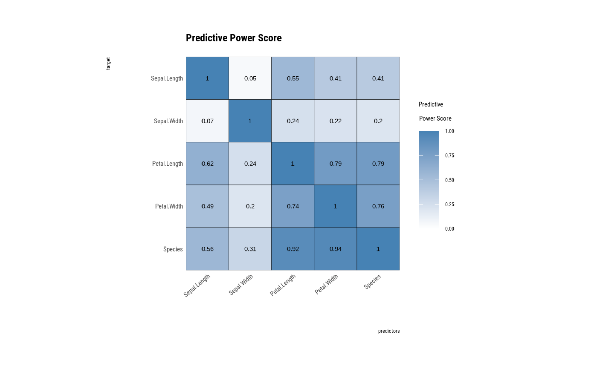
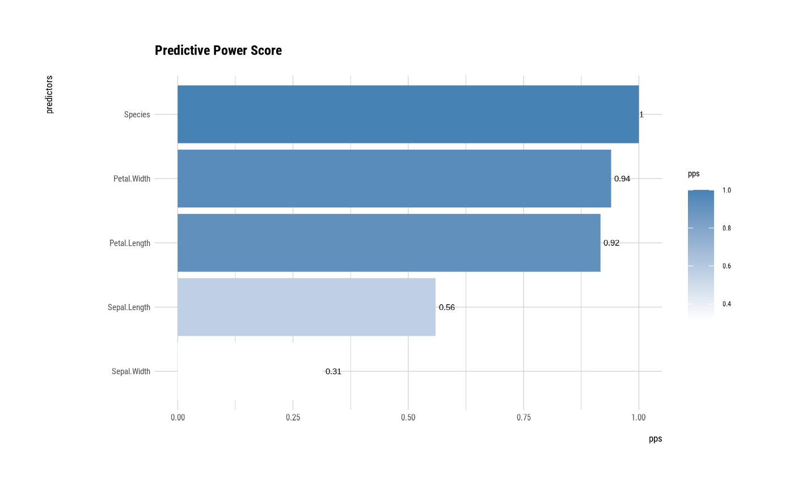
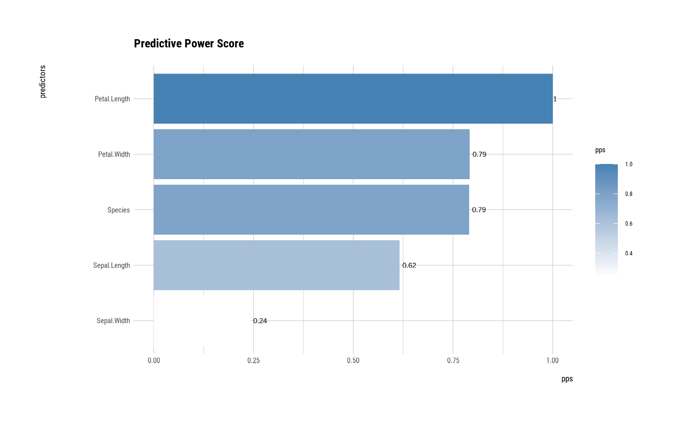

Visualize by attribute of `pps` class. The plot of a PPS(Predictive Power Score) is a bar plot or tile plot by PPS.
# S3 method for pps
plot(x, typographic = TRUE, base_family = NULL, ...)an object of class "pps", usually, a result of a call to pps().
logical. Whether to apply focuses on typographic elements to ggplot2 visualization. The default is TRUE. if TRUE provides a base theme that focuses on typographic elements using hrbrthemes package.
character. The name of the base font family to use for the visualization. If not specified, the font defined in dlookr is applied. (See details)
arguments to be passed to methods, such as graphical parameters (see par).
A ggplot2 object.
The base_family is selected from "Roboto Condensed", "Liberation Sans Narrow", "NanumSquare", "Noto Sans Korean". If you want to use a different font, use it after loading the Google font with import_google_font().
library(dplyr)
# If you want to use this feature, you need to install the 'ppsr' package.
if (!requireNamespace("ppsr", quietly = TRUE)) {
cat("If you want to use this feature, you need to install the 'ppsr' package.\n")
}
# pps type is generic ======================================
pps_generic <- pps(iris)
pps_generic
#> x y result_type pps
#> 1 Sepal.Length Sepal.Length predictor and target are the same 1.00000000
#> 2 Sepal.Width Sepal.Length predictive power score 0.04632352
#> 3 Petal.Length Sepal.Length predictive power score 0.54913985
#> 4 Petal.Width Sepal.Length predictive power score 0.41276679
#> 5 Species Sepal.Length predictive power score 0.40754872
#> 6 Sepal.Length Sepal.Width predictive power score 0.06790301
#> 7 Sepal.Width Sepal.Width predictor and target are the same 1.00000000
#> 8 Petal.Length Sepal.Width predictive power score 0.23769911
#> 9 Petal.Width Sepal.Width predictive power score 0.21746588
#> 10 Species Sepal.Width predictive power score 0.20128762
#> 11 Sepal.Length Petal.Length predictive power score 0.61608360
#> 12 Sepal.Width Petal.Length predictive power score 0.24263851
#> 13 Petal.Length Petal.Length predictor and target are the same 1.00000000
#> 14 Petal.Width Petal.Length predictive power score 0.79175121
#> 15 Species Petal.Length predictive power score 0.79049070
#> 16 Sepal.Length Petal.Width predictive power score 0.48735314
#> 17 Sepal.Width Petal.Width predictive power score 0.20124105
#> 18 Petal.Length Petal.Width predictive power score 0.74378445
#> 19 Petal.Width Petal.Width predictor and target are the same 1.00000000
#> 20 Species Petal.Width predictive power score 0.75611126
#> 21 Sepal.Length Species predictive power score 0.55918638
#> 22 Sepal.Width Species predictive power score 0.31344008
#> 23 Petal.Length Species predictive power score 0.91675800
#> 24 Petal.Width Species predictive power score 0.93985320
#> 25 Species Species predictor and target are the same 1.00000000
#> metric baseline_score model_score cv_folds seed algorithm
#> 1 <NA> NA NA NA NA <NA>
#> 2 MAE 0.6893222 0.6620058 5 1 tree
#> 3 MAE 0.6893222 0.3100867 5 1 tree
#> 4 MAE 0.6893222 0.4040123 5 1 tree
#> 5 MAE 0.6893222 0.4076661 5 1 tree
#> 6 MAE 0.3372222 0.3184796 5 1 tree
#> 7 <NA> NA NA NA NA <NA>
#> 8 MAE 0.3372222 0.2564258 5 1 tree
#> 9 MAE 0.3372222 0.2631636 5 1 tree
#> 10 MAE 0.3372222 0.2677963 5 1 tree
#> 11 MAE 1.5719667 0.5971445 5 1 tree
#> 12 MAE 1.5719667 1.1945031 5 1 tree
#> 13 <NA> NA NA NA NA <NA>
#> 14 MAE 1.5719667 0.3265152 5 1 tree
#> 15 MAE 1.5719667 0.3280552 5 1 tree
#> 16 MAE 0.6623556 0.3377682 5 1 tree
#> 17 MAE 0.6623556 0.5315834 5 1 tree
#> 18 MAE 0.6623556 0.1684906 5 1 tree
#> 19 <NA> NA NA NA NA <NA>
#> 20 MAE 0.6623556 0.1608119 5 1 tree
#> 21 F1_weighted 0.3176487 0.7028029 5 1 tree
#> 22 F1_weighted 0.3176487 0.5377587 5 1 tree
#> 23 F1_weighted 0.3176487 0.9404972 5 1 tree
#> 24 F1_weighted 0.3176487 0.9599148 5 1 tree
#> 25 <NA> NA NA NA NA <NA>
#> model_type
#> 1 <NA>
#> 2 regression
#> 3 regression
#> 4 regression
#> 5 regression
#> 6 regression
#> 7 <NA>
#> 8 regression
#> 9 regression
#> 10 regression
#> 11 regression
#> 12 regression
#> 13 <NA>
#> 14 regression
#> 15 regression
#> 16 regression
#> 17 regression
#> 18 regression
#> 19 <NA>
#> 20 regression
#> 21 classification
#> 22 classification
#> 23 classification
#> 24 classification
#> 25 <NA>
if (!is.null(pps_generic)) {
# visualize pps class
plot(pps_generic)
}

# pps type is target_by =====================================
##-----------------------------------------------------------
# If the target variable is a categorical variable
# Using dplyr
pps_cat <- iris %>%
target_by(Species) %>%
pps()
if (!is.null(pps_cat)) {
# plot pps class
plot(pps_cat)
}

##---------------------------------------------------
# If the target variable is a numerical variable
# Using dplyr
pps_num <- iris %>%
target_by(Petal.Length) %>%
pps()
if (!is.null(pps_num)) {
# plot pps class
plot(pps_num)
}
